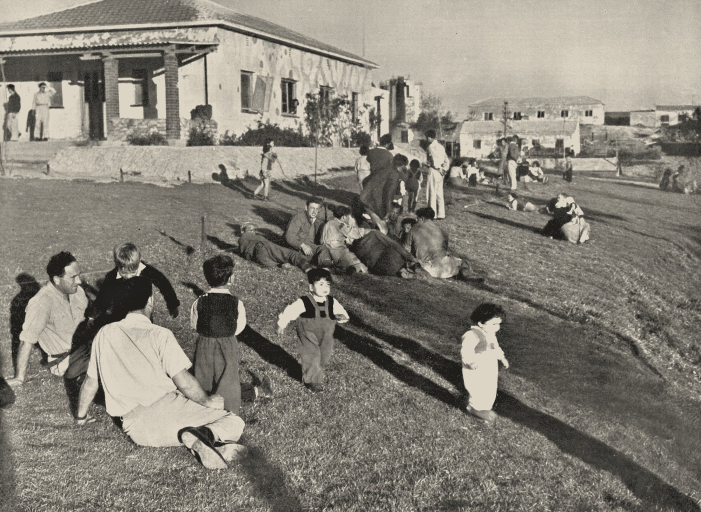
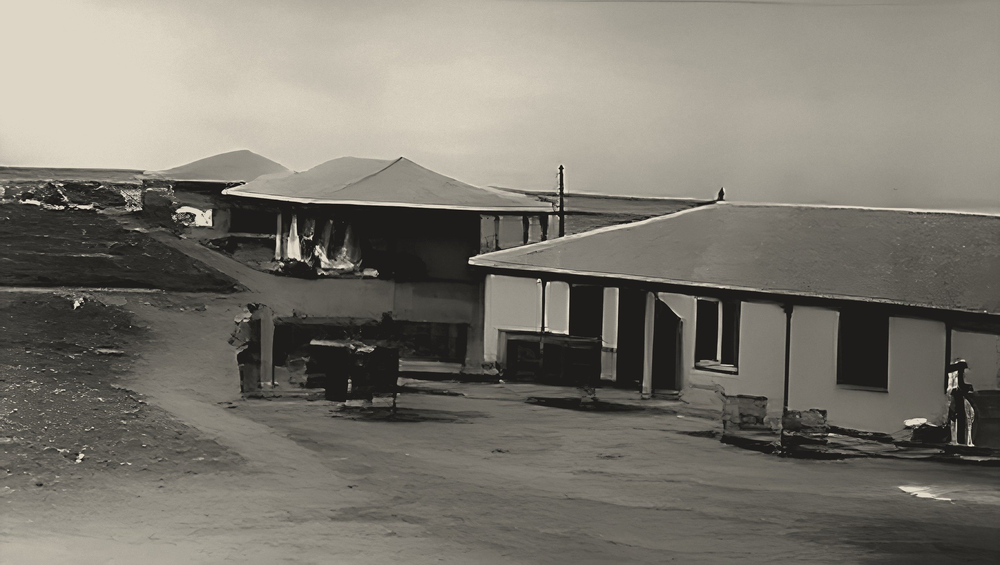
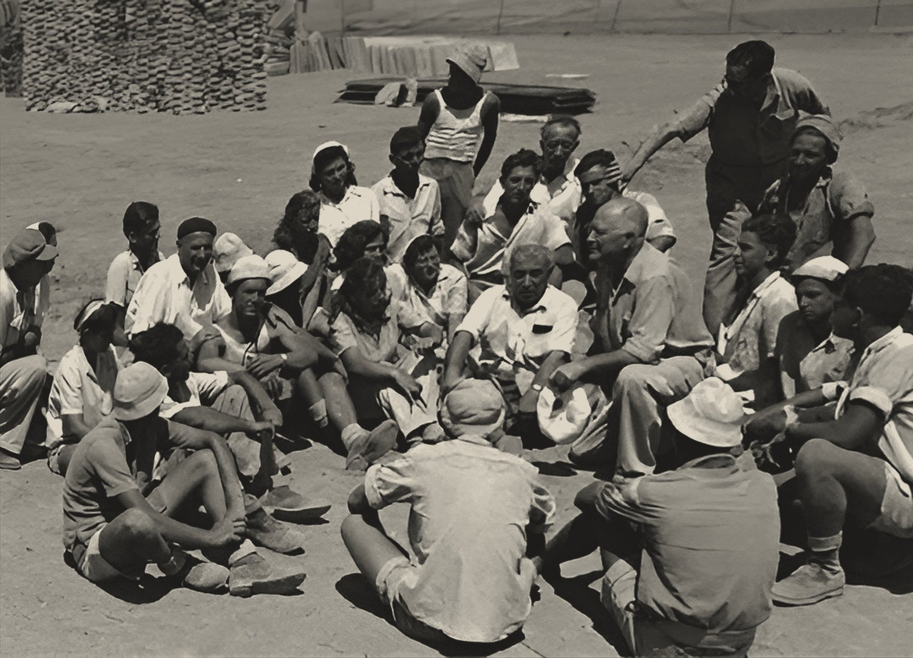

דורות: הקיבוץ הראשון בנגב
דורות הוקמה בחנוכה תש״ב (1941) על קרקע שנרכשה מתושבי הכפר הוג׳. מקימיה היו עולים מגרמניה, ואליהם הצטרפו גרעינים מהארץ, מלטביה וצ׳כיה. היא הייתה הקיבוץ הראשון בנגב בהיווסדו.
על שם מי נקראה דורות
שמה הוא ראשי תיבות של דב, רבקה ותרצה הוז, בני משפחה שנספו בתאונת דרכים בסוף 1940. כבר ב־1946 נחנכה בה בריכת השחייה הראשונה בנגב.

ניר עם ורוחמה: מקומות עם עבר
ניר עם הוקמה בט״ו בשבט תש״ג (1943) על אדמות בית חאנון. בתחילה נקרא בית חנון, אחר כך שדמות, ובשנת 1946 הוסב שמו לניר עם.
רוחמה היא סיפור ארוך יותר. כבר ב־1911 הוקמה במקום מושבה על ידי אגודת ״שארית ישראל״ ממוסקבה, היישוב היהודי הראשון בנגב בעת החדשה. היא ננטשה ושוקמה כמה פעמים, ובשנת 1944 הוקם בה הקיבוץ הנוכחי בידי חברי קיבוץ העמל, גרעיני עלייה של השומר הצעיר.
גבים וברור חיל: ערב מלחמה
גבים עלתה על הקרקע בי״ב באלול תש״ז, 28 באוגוסט 1947, שלושה חודשים לפני החלטת האו״ם על החלוקה.
ברור חיל החלה כמשלט. באפריל 1948 הקימו הפלמ״ח ותושבי האזור משלט ליד הכפר ברייר, כדי לפתוח את הדרך ליישובי הנגב. ב־5 במאי 1948 עלו אליו צעירים יוצאי מצרים מתנועת החלוץ הצעיר, גרעיני ״הסנה״ ו״חרות״.

מאיפה באו השמות
לשמות של היישובים יש סיפורים משלהם. ניר עם קיבל את שמו הנוכחי ב־1946, כסמל ל״ניר של חלוצי העם״, החורשים דרך להתיישבות באזור רחב ידיים. רוחמה נקראת על פי דברי הנביא הושע: ״וְרִחַמְתִּי אֶת־לֹא רֻחָמָה״.
גבים נקראה בתחילה שדה עקיבא, על שם האגרונום עקיבא אטינגר, ואחר כך שונה שמה על שם הגומות הטבעיות בנחלים, המתמלאות במי גשמים בחורף. דורות, כזכור, היא ראשי תיבות של דב, רבקה ותרצה הוז.